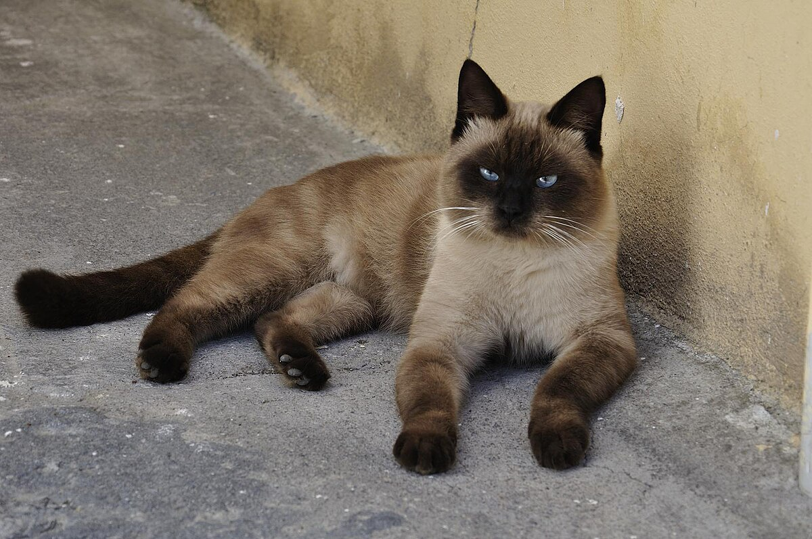

Самыми популярными породами кошек принято считать вислоухих котов или шведских серых, но данное утверждение вовсе неправдиво Среди людей, самая распространенная порода кошек, это смесь. Такие коты, хоть и не так красивы, но являются бюджетным вариантом для хозяев, а так же, они имеют более стойкий иммунитет Другие породы кошек, являются вариантом подороже, а некоторые из них отличаются своим скверным нравом. Например, сиамские кошки, имея отличную память, легко запоминают плохие действия хозяев. Они мстительны и не так ласковы.
Особенности: Уникальная форма ушей, загнутых вперёд и вниз, что привлекает многих любителей кошек. Спокойный и уравновешенный характер, дружелюбны к людям и другим животным, что является огромным плюсом, ведь многие другие породы, не так ласковы. Могут стоять «столбиком», как сурикаты, для расслабления позвоночника, поэтому. они очень часто пугают хозяев данной позицией тела. Не любят, когда их берут на руки против воли, но не проявляют агрессии.
Еще одна популярная порода кошек. Эти пушистики, не только восхищают всех своими размерами, но и доброжелательность, несмотря на внешний вид. Чаще всего, эти коты играют с водой, плавают или стараются как можно больше времени провести с хозяином, тем самым проявляя мягкость и ласку по отношению к людям. Были случаи, когда данная порода кошек нападала на людей, но такие ситуации единичны, а коты и вовсе не наносили большого вреда человеку.
Данная порода обладает невероятно мягкой шерстью. Так же, эти кошки очень чистоплотны и и имеют повышенный интерес к воде. Они редко выходят на прогулку без надобности и еще реже пачкают свою шерсть. Именно поэтому, данная порода имеет второе название "Чистоплотная сибирская", что и является показателем для выбора именно этой породы кошек.
